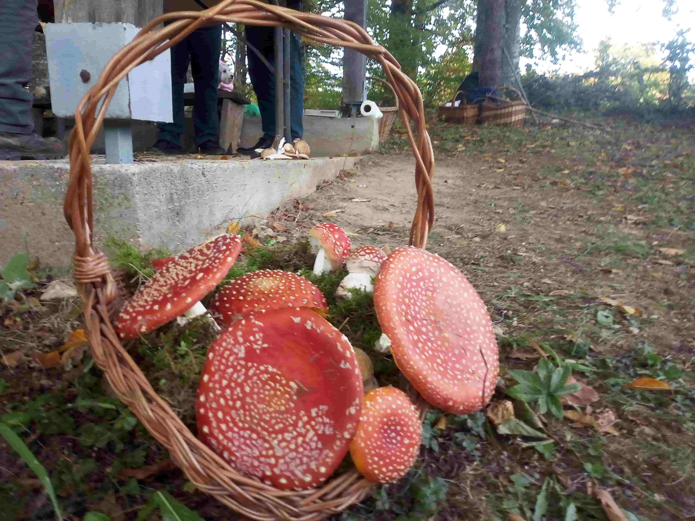

Pecka Visitor Center – Mushroom Workshop
Pecka · Mrkonjić Grad · Bosnia and Herzegovina
Located in the village of Pecka in western Bosnia and Herzegovina, the Pecka Visitor Center offers an opportunity to discover the region's natural heritage and local traditions. The Mushroom Workshop introduces visitors to the fascinating world of wild mushrooms, highlighting the importance of local knowledge, biodiversity and the surrounding forests. It is a place where nature, education and community life come together, offering visitors a closer look at the cultural and natural richness of rural Bosnia and Herzegovina. The workshop also provides an opportunity to learn how local communities understand, collect and use wild mushrooms, while developing a greater appreciation for the biodiversity of the surrounding landscape. Its activities connect practical knowledge with environmental awareness and the preservation of local traditions. During my visit, I had the chance to observe this community experience and learn more about the relationship between people and nature in the Pecka region. This collection preserves my personal photographs and memories of the visit.
My Photo Gallery
Explore my personal travel photos from Pecka Visitor Center and Mushroom Workshop.
View All Photos ↗